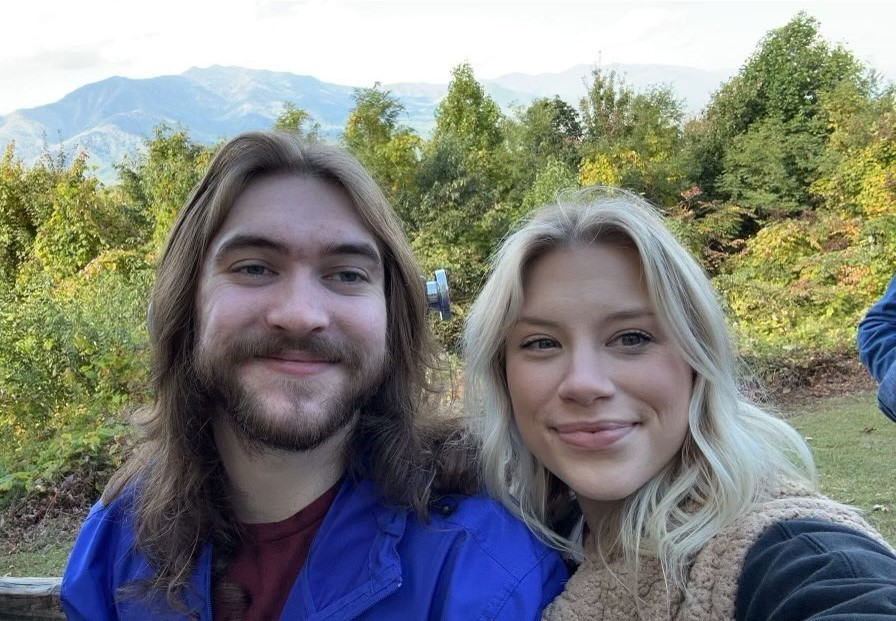

Future Developer for YOUR Company
This picture is of me and my gorgeous girlfriend, Brinkley. We have a mini Australian Shepherd, named Cash, and 3 cats; Scarlet, Skadi and Winnie. My girlfriend and I love to travel; the picture above is us in the Smoky Mountains! We also love to be lazy: watching TV shows (we just finished GoT), playing video games, and of course, napping with all our animals.
But enough about me, let's talk Python. It really all started when I was taking an Enneagram test for this insurance job I applied for. I was denied for the insurance job because my 'type' wasn't the right fit for the agency, but this was actually a blessing in disguise as it opened my eyes to what I really wanted to do. My journey began in August, I started Treehouse and fell in love with Python. It was very easy to read and the videos Treehouse made were very high quality. Over the next few months I would juggle working on the Python TechDegree, my part-time Pharmacy Tech job at WalMart, and making time for family. I went from having no coding experience to having my own portfolio in a matter of months!
Resume